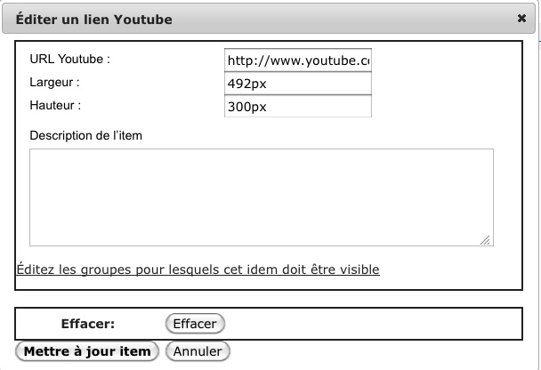

Ajouter des contenus Multimédia
Exemple où Ajouter Multimedia a été employé pour ajouter une vidéo Youtube. Pour Youtube il suffit d'aller dans la page de présentation de la vidéo et de copier l'URL montrée dans la barre d'adresse du navigateur.

Exemple de dialogue accessible avec le bouton Edit.
Vous pouvez ajouter des vidéos, des présentations Flash, des vidéosYoutube ou tout autre site Web dans vos pages.
Si vous employez "Ajouter Ressource" ces objets apparaîtront comme un simple lien sur lequel il faudra cliquer.
Si vous employez "Ajouter Multimedia" l'objet apparaitra dans un cadre au sein de la page. Un exemple est montré à droite.
Leçon reconnait automatiquement l'extension du fichier et fera appel, dans la page, au visualiseur adapté.
Une fois l'item ajouté, il est recommandé d'employer le bouton "Éditer" pour ajuster manuellement la taille du cadre. Leçon est incapable de déterminer ces dimensions automatiquement et se contente d'inscrire l'objet dans un cadre large par défaut. Leçon affichera ce cadre, ce qui vous permettra d'ajuster sa taille. Les étudiants ne le voient pas.
En ce qui concerne les vidéos Youtube,il vous suffira de copier l'URL affichée en haut de votre navigateur. Ne copiez surtout pas le code contenu dans le cadre " Copy embed html ".
Accessibilité
Faites bien attention au fait que, pour rendre vos pages accessibles aux handicapés, il est nécessaire d'employer le bouton "Éditer" pour insérer une description textuelle de vos objets multimédia et de vos images. Alternativement vous pourriez envisager de créer une page spéciale pour présenter son contenu de façon plus accessible. Il suffit d'employer "Ajouter sous-page".
FAQ Multimédia
Précautions pour Internet Explorer
NOTE: Leçon est compatible avec Internet Explorer. Cependant nous recommandons d'employer un navigateur alternatif, comme Firefox, lorsque vous construirez une page avec "Ajouter Multimedia" . En effet, Internet Explorer implémente la sécurité de telle façon qu'il se peut que vous vous retrouviez dans une situation où vous ne pourrez pas éditer correctement cette page. Lorsque IE rencontre une difficulté avec une page ou, parfois, lorsque le chargement de l'objet ne se termine pas, la boite de dialogue peu se geler.
De même, lorsque vous emploierez IE, utilisez des URL sécurisées (qui commencent avec "https:"). Autrement les usagers recevront systématiquement des avertissements en visualisant les objets et cela peut interromprre les vidéos. Sinon recommandez Firefox.
Formats recommandés
Actuellement nous recommandons FLV, si vous ne cherchez pas la compatibilité iPad. Leçon intègre un visualiseur Flash player de bonne qualité.
Si vous voulez être compatible avec l'iPad, le meilleur choix est MP4. Cependant ces fichiers MP4 doivent être préparés spécialement. MP4 possède tellement d'options qu'il n'est pas facile de trouver celles qui fonctionnent pour iPad et iPhone. Tous les outils de conversion ne sont pas capables de préparer des fichiers qui commencent à afficher la vidéo immédiatement sans attendre la fin du téléchargement. Vous pouvez employer Quicktime Pro, et exporter votre vidéo en employant le profil "Vidéo pour iPhone". Changez ensuite l'extension de .m4v en .mp4.
Malheureusement l'expérience montre que MP4 avec Windows produit des résultats variables suivant les visualiseurs intégrés employés. C'est la raison pour laquelle Leçon emploie Flash, lorsqu'il est disponible, pour lire des vidéos MP4 . Je vous suggère fortement de conseiller à vos utilisateurs d'installer Flash. Quicktime et Windows Media lisent parfois correctement des fichiers MP4 mais le résultat est variable avec Windows, en particulier en ce qui concerne un démlarrage immédiat.
Problèmes avec la taille des images
Après avoir ajouté un objet avec "Ajouter multimedia", vous devrez très certainement employer le bouton "Éditer" pour ajuster sa taille. Par défaut la hauteur est de 300 pixels et la largeur la taille de la la fenêtre. Il vous faudra très probablement la réduire.
Certains visualiseurs peuvent déformer ou couper votre image si vous ne choisissez pas une taille correcte, comme les versions anciennes de Windows Media Player avec Windows XP. Il est donc conseillé d'ajuster la taille aux dimensions exactes de l'objet.
Où vont les fichiers chargés ?
La fonction "Téléversement" place normalement les fichiers dans un dossier séparé pour chaque page principale de Leçon (chaque entrée dans le menu de gauche). Si vous préférez organiser ces fichiers vous-même téléversez les d'abord à l'emplacement de votre choix dans "Ressources". Employez ensuite "Choisir fichier existant" pour l'insérer dans la page.
Les URLs sont placées dans un sous-dossier de l'instance appelé urls.
Aider vos étudiants
Malheureusement l'emploi de Flash diffère selon le navigateur. Vous pourriez créer des entrées différentes de Leçon, pour chaque type de fichier que vous employez. En identifiant chacune de ces pages vous permettrez aux étudiants de savoir quel plug-in employer avant de tenter de visualiser les objets multimédia.
Problèmes connus
- Il se peut que le plug-in Windows Media pour Macintosh produise une image blanche, à moins que le fichier ne soit public. Placez le fichier dans l'outil Ressources puis modifiez les propriétés du fichier ou du dossier qui le contient pour le rendre public.
- Avec Safari, sur Macintosh, si vous désirez éditer une vidéo Youtube et changer l'URL, vous risquez de ne plus voir le visualiseur après mise à jour. Les choses redeviendront normales après rafraichissement de la page du navigateur. Les étudiants ne verront rien de particulier.
- Internet Explorer affiche un avertissement, à moins que l'adresse URL de la page ne soit sécurisée, c'est à dire https://.... Pour les fichiers stockés dans Sakai , la bonne version de l'URL est créée automatiquement mais ce n'est pas vrai pour les URLs que vous définirez vous-même.
- Avec Windows,on peut être amené à voir les paramètres de sécurité définis pour Internet Explorer. Certains visualiseurs nécessitent d'activer Active X. IE peut ne signaler aucun problème et juste montrer un cadre vite où votre vidéo devrait s'afficher.
- Certains visualiseurs sont incapables d'afficher les images si la connexion est sécurisé et que le serveur ne possède pas de certificat de sécurité.
- Le dialogue, entre le plug-in et l'utilisateur, peut ne pas aboutir. Par exemple s'il demande, après installation, d'accepter les conditions de licence. Firefox avertit mais pas IE. IE expose simplement le cadre où devrait se trouver votre élément.